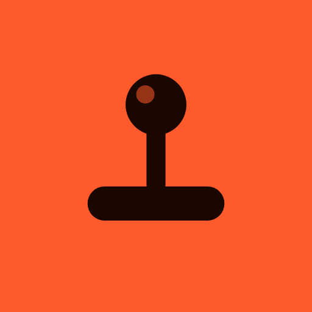

The Arcade app
Every game, your account and your progress in their own app on your Mac, PC, Chromebook, Android phone or Android TV. It updates by itself and only takes a few MB.
The app isn't from an app store or signed with a paid Apple or Microsoft certificate yet, so your device asks before opening it. It's safe: just allow it once.
- Windows: when SmartScreen says “Windows protected your PC”, click More info, then Run anyway. On Windows 7 it may say “unknown publisher”: click Run.
- Mac: if it says Apple “could not verify” the app, click Done, then open System Settings → Privacy & Security, scroll down and click Open Anyway (on macOS 14 or older you can also right-click the app and choose Open). If you downloaded the app before 18 November and it said it was “damaged”, download it again: that copy was broken and this one is fixed.
- Chromebook: the .apk needs ADB debugging turned on (see “On a Chromebook” below). Installing from Chrome needs nothing.
- Android: when it asks, allow your browser (or the Downloader app on a TV) to install unknown apps, then tap Install.
Mac
Mac
Apple chip (M1 to M4) and IntelWorks on every Mac, with an Apple chip (M1, M2, M3, M4…) or an Intel processor. The 3D games run best on macOS 12 Monterey or newer. On macOS 10.13 High Sierra and 10.14 Mojave the app opens too, but a few pages may look a bit off. Older Mac? See Legacy at the bottom.
Download for MacWindows
Windows (64-bit)
Most Windows PCs and laptopsFor PCs with an Intel or AMD processor, which is almost every Windows computer. Pick this one if you're not sure. Windows 7 or 8? See Legacy at the bottom.
Download for WindowsWindows on ARM
Snapdragon and Surface Pro X laptopsFor Windows laptops with a Qualcomm Snapdragon (ARM) chip, like Copilot+ PCs and the Surface Pro X. Settings → System → About says “ARM-based processor”.
Download for Windows on ARMAndroid
Android phone or tablet
Android 7 or newerEvery game full screen with touch controls, plus voice chat, video calls and Social. Open this page on your phone and tap Download.
Download for AndroidAndroid TV
Google TV, Chromecast, Nvidia Shield, Sony and TCL TVsIts own TV version, built to run smoothly on TVs: the big-screen layout, played with the TV remote or a controller, and on your TV's home screen. Install it with the free Downloader app.
Download for Android TVSamsung TV
Samsung TV app
Samsung smart TVs from 2015 on (Tizen)The big-screen layout as its own app on your Samsung TV, played with the TV remote. Samsung only lets you add apps from outside its store with a free developer certificate, so installing it takes a computer and about 20 minutes (see the steps below).
Download for Samsung TVSamsung Internet on the TV
Any Samsung smart TV, nothing to installThe quick way: open the TV's Internet app and go to playthearcade.github.io. You get the same TV layout and remote controls. Add it to the TV's bookmarks to find it again.
How to installChromebook
Chromebook app
Chromebooks with Google PlayMade for Chromebooks: opens in its own window with the computer layout, keyboard and mouse controls, and mouse lock for the 3D games. F11 for full screen.
Download for ChromebookInstall from Chrome
Any Chromebook, school ones tooNo Play Store or developer mode needed: Chrome adds The Arcade to your shelf and launcher as its own app window. Works on every Chromebook that can open the site.
Install The ArcadeWeb app
Install from your browser
Any computer, iPhone or iPadNo download: your browser adds The Arcade to your home screen or desktop as its own app. Games you’ve played are saved on the device and open without internet.
Install The ArcadeChrome or Edge: the install icon at the right of the address bar, or the menu → Install The Arcade. Safari on a Mac: File → Add to Dock. iPhone and iPad: open the site in Safari, tap Share, then Add to Home Screen.
Legacy
For older computers that can’t run the apps above. They bring their own browser engine, so they’re bigger downloads. Same games, same account.
Windows 7, 8 and 8.1
Older PCs that can’t run the app aboveA separate version for Windows 7, 8 and 8.1, which the main Windows app doesn’t support. It’s bigger because it brings its own browser engine. Not sure which one? Start → right-click Computer → Properties says “64-bit” or “32-bit”.
macOS 10.9 to 10.12
Mavericks, Yosemite, El Capitan and SierraA separate version for older Macs that can’t run the Mac app above (it needs macOS 10.13 or newer). Pick the button for your macOS: Apple menu → About This Mac shows the version. On 10.9 and 10.10 the first visit to each game takes a few extra seconds while the app gets it ready for the older Mac, then it’s quick.
After downloading
On a Mac
- Open the .dmg file.
- Drag The Arcade into Applications.
- Open it from Applications or Launchpad. If macOS warns you, use Open Anyway (see above). On macOS 10.9 to 10.12: right-click the app, choose Open, then Open again.
- Log in with your Arcade account and all your progress is there.
On Windows
- Run the setup .exe.
- If SmartScreen appears, click More info → Run anyway.
- Follow the installer. The Arcade goes in your Start menu.
- Log in with your Arcade account and all your progress is there.
On an Android phone
- Tap the downloaded .apk (or open it from Downloads).
- Allow your browser to install unknown apps when asked.
- Tap Install, then open The Arcade.
- Log in with your Arcade account and all your progress is there.
On Android TV
- Install the free Downloader app from the TV's Play Store.
- In Settings, allow Downloader to install unknown apps.
- Open Downloader and type playthearcade.github.io/app/TheArcade-androidtv.apk.
- Install it: The Arcade appears on your TV's home screen.
On a Samsung TV
- On a computer, install the free Tizen Studio from Samsung, then in its Package Manager add Samsung Certificate Extension and TV Extensions.
- On the TV: Apps, then press 1 2 3 4 5 on the remote, turn Developer mode on, type your computer's IP address and restart the TV.
- In Tizen Studio's Device Manager, add the TV by its IP address. In Certificate Manager, make a Samsung certificate (sign in with a Samsung account) for that TV.
- Sign and install: tizen package -t wgt -s your certificate -- TheArcade-tizen.wgt, then tizen install -n TheArcade-tizen.wgt. The Arcade appears in the TV's Apps.
On a Chromebook
- Install from Chrome: click Install The Arcade above, or the install icon at the right of the address bar, or ⋮ → Cast, save and share → Install page as app.
- Chromebook app (.apk): Chromebooks only install .apk files with ADB debugging on: Settings → Advanced → Developers → Linux development environment → Develop Android apps → Enable ADB debugging. Then open the downloaded file from the Files app (or run adb install TheArcade-chromebook.apk in Linux).
- On a school or work Chromebook use Install from Chrome: they don't allow .apk files.
- Log in with your Arcade account and all your progress is there.